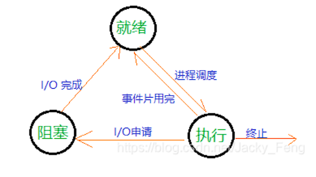

操作系统
多道批处理系统：内存中存放多道程序，当某道程序因某种原因如执行I/O操作时而不能继续运行放弃CPU时，操作系统便调度另一程序运行，这样CPU就尽量忙碌，达到提高系统效率的目的。
三种操作系统的比较
- 单道批处理系统：计算机一次只能处理一个作业，用户提交的作业通常以批量形式交给操作员，操作员按照一定的顺序将作业一个个输入到计算机中。
- 多道批特点：宏观上并行，微观上串行，无序性。
- 分时系统：人机交互、共享主机。多路性、独立性、及时性、交互性
操作系统的基本特性：并发、共享、虚拟、异步。并发和共享互为存在条件。
进程的特征：
- 动态性（进程最基本的特征）
- 并发性
- 独立性
- 异步性
进程的基本状态和转化
- 就绪状态
- 执行状态
- 阻塞状态

OS管理的控制表一般可以分为以下四类：内存表、设备表、文件表和用于进程管理的进程表，通常进程表又被称为PCB。
PCB的作用：
- 作为独立运行的基本单位的标志。
- 实现间断性运行方式。
- 提供进程管理所需要的信息。
- 提供进程调度所需要的信息。
- 实现和其他进程的同步和通信。
进程的阻塞和唤醒
- 引起进程阻塞和唤醒的事件
- 向系统请求共享资源失败
- 等待某种操作完成
- 新数据尚未到达
- 等待新任务的到达
- 引起进程阻塞和唤醒的事件
消息传递系统
- 直接通信方式，是指发送进程利用OS所提供的发送原语，直接把消息发送给目标进程
- 间接通信方式，是指发送进程和接收进程都是通过 共享中间实体 （称为信箱）的方式进行信息的发送和接收，进而完成进程间的通信。
线程——作为调度和分配的基本单位
- 线程引入的目的：减少程序在并发执行时所付出的时空开销，以使OS具有更好的并发性。
- 基本性质：是一个可拥有资源的独立单位；是一个可以独立调度和分派的基本单位。
进程调度方式：非抢占式调度方式和抢占式调度方式
非抢占式调度方式
把处理机分配给某进程，就会一直让它运行下去，不会因为时钟中断或其他原因去抢占该进程的处理机，直至该进程完成某事件而被阻塞时，才会让出处理机。
抢占式调度
允许调度程序根据某种原则去暂停某个正在执行的进程，并将已分配给该进程的处理机重新分配给另一个进程。
周转时间=作业完成时刻-作业提交时刻
平均周转时间=1/n(作业1的周转时间+…+作业n的周转时间)
先来先服务算法（FCFS)
从后备作业队列中选择几个最先进入该队列的作业，将其调入内存，并为它们分配资源和创建进程。
短作业优先算法（SJF)
以作业的长短来计算优先级，作业越短，其优先级就越高。
响应比=（等待时间+需求服务时间）/要求服务时间 = 响应时间/需求服务时间
时间片大小的确定
略大于一次典型的交互所需的时间，使大部分交互可以在一个时间片内完成，从而获得很小的响应时间。
引起死锁的原因
- 竞争不可抢占资源
- 竞争可消耗型资源
- 进程推动顺序不当
产生死锁的必要条件
互斥条件、请求和保持条件、不可抢占条件、循环等待条件
进程中的四个区
进入区、临界区、退出区、剩余区
解决临界区问题的同步机制应该遵循的准则
空闲让进、忙则等待、有限等待、让权等待。
变量turn表示哪个进程可以进入临界区，flag[i]代表进程是不是进入临界区。
记录型信号变量
是一种不存在“忙等”现象的进程同步机制。但在采取了“让权等待”策略后，又会出现多个进程等待访问同一临界资源的情况。
计算机存储层次：CPU寄存器、主存储器、辅助存储器
基于顺序搜索的动态分区分配算法
- 首次适应算法
- 循环首次适应算法
- 最佳适应算法
- 最坏适应算法
基于索引搜索的动态分区分配算法
- 快速适应算法
- 伙伴系统
- 哈希算法
分页存储管理方式：将用户程序的地址空间分为若干个固定大小的区域，称为页或页面。内存空间分为若干个物理块或页框，页和块大小相同
分段存储管理方式：离散分配方式。用于用户程序的地址空间分为若干个大小不同的段，每段可定义一组相对完整的信息。在存储器分配时，以段为单位。
分页存储管理的基本方法
页表：作用是实现从页号到物理块号的地址映射
信息共享基础上为什么分段比分页优
分段系统的一个突出优点是易于实现段的共享
在对程序数据共享时，是以信息的逻辑单位为基础的，在分段方式中，每个段都是逻辑上的一个整体，容易做到信息共享。而在分页方式中，页面大小固定，共享的信息可能存在多个页中，需要花费的比分段方式更多的时间来实现共享。
虚拟存储器的特征：多次性、对换性、虚拟性
页面置换算法（Optional Practical Traning)
- 最佳页面置换算法OPT——未来长时间内不会使用页面换掉
- 先进先出页面置换算法FIFO——淘汰最先进入内存的页面
- 最近最久未使用LRU——最近最久未使用的页面淘汰